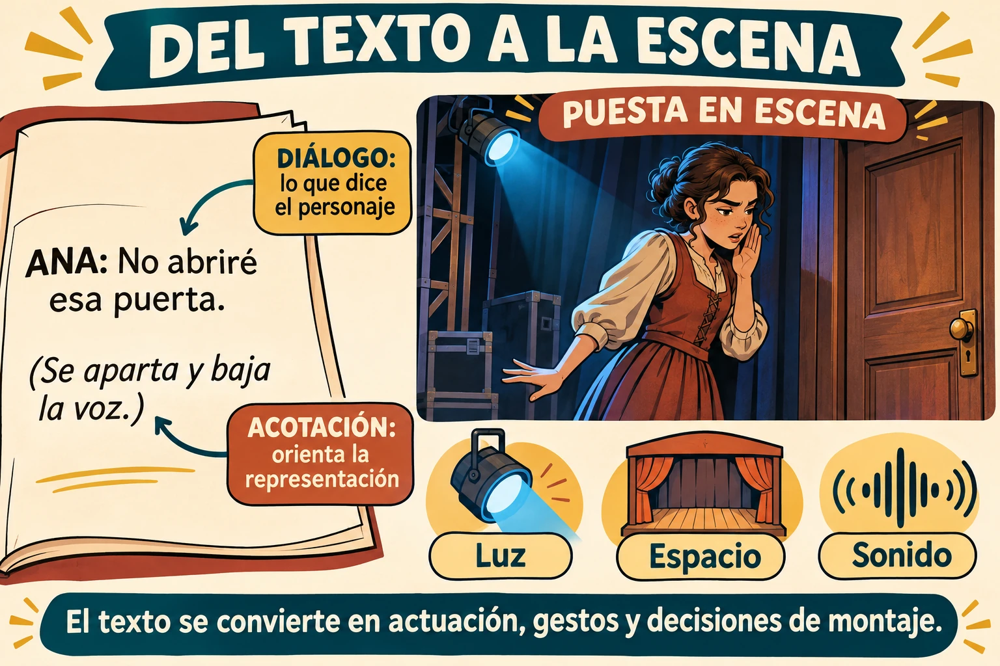
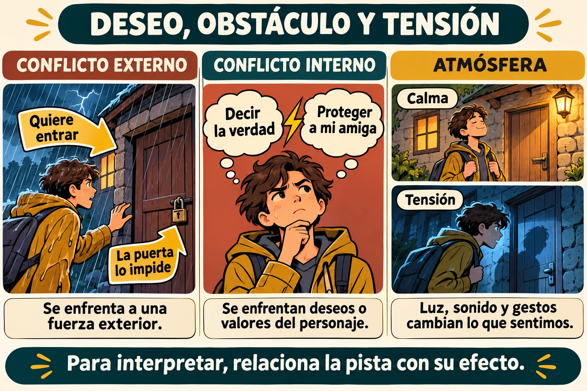
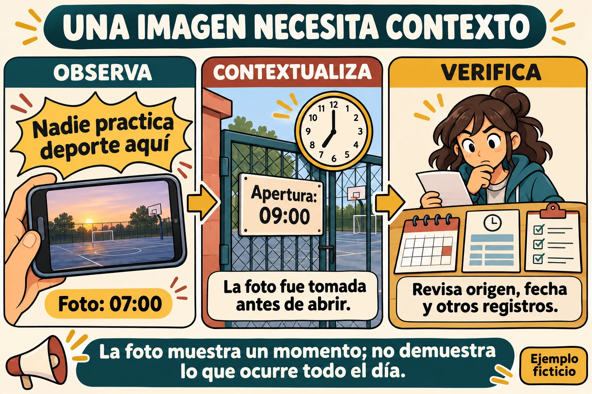
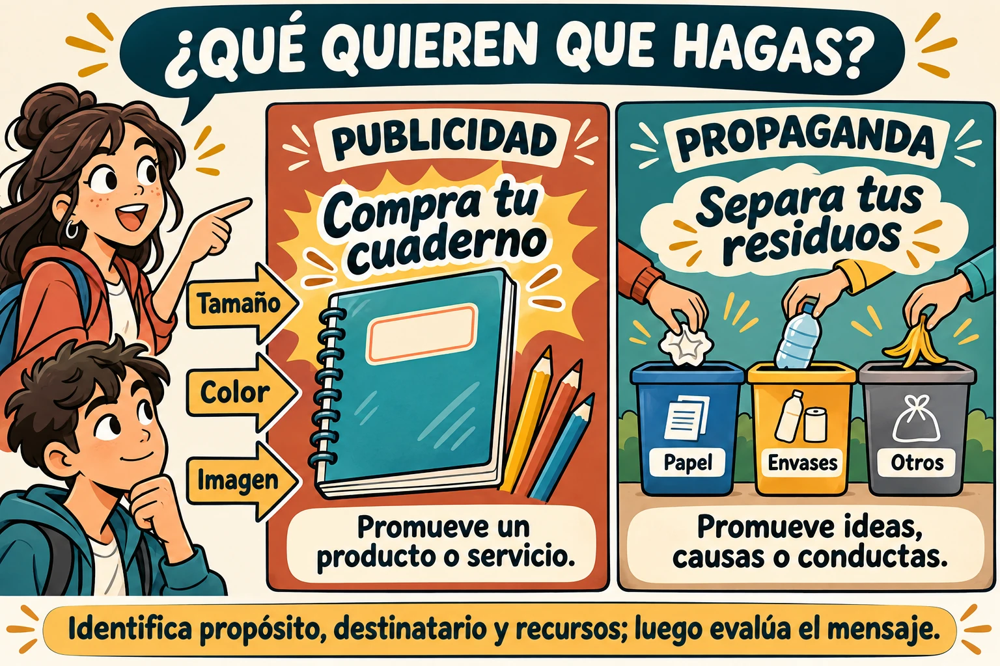

TÉCNICO PROFESIONAL: 2 SUR 1147 – FONOS (71) 2615416 · 2615410
BÁSICA y LICEO: 11 ORIENTE 1751 – FONOS (71) 2615454 · 2615457
www.salesianostalca.cl – cest@salesianostalca.cl · TALCA - REGIÓN DEL MAULE - CHILE
Lengua y Literatura · 2.º medio HC · Prof. Francisco Javier Núñez Valenzuela
Cómo una escena y un mensaje orientan nuestra mirada
Nombre
RUT
Profesor
Francisco Javier Núñez Valenzuela
Curso
N° Lista
Asignatura
Lengua y Literatura
Guía N°
Revisado
Semestre
II
Fecha
Puntaje
Práctica formativa
Objetivo
Interpretar conflictos dramáticos y evaluar mensajes de los medios, explicando cómo sus recursos y fuentes construyen sentido y credibilidad.
Habilidades
Interpretar, aplicar, justificar y evaluar con evidencia.
INSTRUCCIONES
1. Observen las imágenes y lean los ejemplos resueltos. 2. Apliquen cada explicación en el cuaderno, según su consigna. 3. Respondan individualmente las alternativas y tareas escritas de esta guía. 4. Revisen una respuesta con su pareja y corrijan antes de entregar.
Antes de comenzar
Lean «La sala estaba vacía». Propongan dos contextos que cambien su interpretación. ¿Basta esa frase para afirmar que a nadie le interesa la actividad?
Normas de trabajo
Escuchen y fundamenten sus ideas con respeto. Cuiden los materiales y la procedencia de la información. No se permite el uso de celular.
Una pregunta para toda la clase
¿Cómo influyen las palabras, la puesta en escena y la selección de datos en lo que creemos?
Fecha programada: 2026-12-09. Textos y ejercicios originales de CEST. Referencias conceptuales: textos escolares MINEDUC de 1.º y 2.º medio. No es una prueba oficial PAES.
Observamos y comprendemos · Del texto a la escena

El diálogo o parlamento contiene lo que dice un personaje. La acotación orienta acciones, gestos o aspectos de la representación.
La puesta en escena concreta decisiones de actuación, espacio, luz y sonido; no es idéntica al texto escrito.
Ejemplo resuelto. «(Se aparta y baja la voz)» orienta la actuación; no es una frase que el personaje deba decir en voz alta.
Ahora aplica. En parejas, escriban en el cuaderno un diálogo de cuatro intervenciones y dos acotaciones para una despedida. Representen dos intervenciones y expliquen una decisión. Tienen 3 minutos.
Escribe una idea o ejemplo aquí y desarrolla la respuesta en tu cuaderno.
Observamos y comprendemos · Deseo, obstáculo y atmósfera

El conflicto enfrenta fuerzas o deseos: puede ser externo o desarrollarse dentro de un personaje.
La atmósfera psicológica se construye mediante acciones, gestos, sonidos y decisiones del montaje, además del lugar físico.
Ejemplo resuelto. Dudar entre decir la verdad y proteger a una amistad muestra fuerzas opuestas dentro del personaje.
Ahora aplica. Individualmente, escriban en el cuaderno un conflicto interno de un personaje. Añadan una acotación de luz o sonido que aumente la tensión y justifiquen su efecto. Tienen 2 minutos.
Escribe una idea o ejemplo aquí y desarrolla la respuesta en tu cuaderno.
Observamos y comprendemos · Una imagen necesita contexto

Una imagen registra un encuadre y un momento. El pie puede aportar datos indispensables para interpretarla.
Antes de aceptar una afirmación, revisar origen, fecha, contexto y otras fuentes pertinentes.
Ejemplo resuelto. Una cancha vacía antes de abrir no demuestra que nadie la use durante el día; faltan datos del horario de atención.
Ahora aplica. En parejas, inventen un titular exagerado para una foto de una plaza vacía. Escriban en el cuaderno un pie que aporte contexto y dos datos necesarios para verificarlo. Tienen 2 minutos.
Escribe una idea o ejemplo aquí y desarrolla la respuesta en tu cuaderno.
Observamos y comprendemos · ¿Qué quieren que hagas?

La publicidad busca promover productos o servicios; la propaganda busca adhesión a ideas, causas o conductas.
La imagen, el color, el tamaño y las palabras orientan la atención. Identificar el propósito no demuestra que el mensaje sea verdadero.
Ejemplo resuelto. «Compra tu cuaderno» invita a adquirir un producto; «Separa tus residuos» promueve una conducta ambiental.
Ahora aplica. Individualmente, diseñen en el cuaderno un afiche para una causa escolar: lema, imagen y destinatario. Expliquen qué recurso visual orienta la atención. Tienen 3 minutos.
Escribe una idea o ejemplo aquí y desarrolla la respuesta en tu cuaderno.
Aplicamos · Definiciones y oraciones
Elige la opción que explica mejor el ejemplo. Puedes consultar las fichas.
1. En una obra, un personaje quiere abrir una sala y otro se opone por una filtración. ¿Qué elemento organiza la acción?
A. Conflicto dramático.
B. Desenlace ya resuelto que elimina cualquier oposición.
C. Narrador protagonista que describe sus recuerdos.
D. Rima consonante entre las palabras de ambos personajes.
Respuesta: ______
2. «(Baja la voz y mira hacia la puerta)». ¿Qué elemento del texto dramático es?
A. Titular informativo que documenta un hecho fuera de la obra.
B. Acotación.
C. Aparte que todos los personajes escuchan como conversación.
D. Verso que expresa la opinión de un narrador omnisciente.
Respuesta: ______
3. Un personaje dice algo al público que los demás personajes, por convención, no oyen. ¿Qué recurso usa?
A. Cita periodística que identifica una entrevista realizada fuera de escena.
B. Acotación que únicamente describe la iluminación del escenario.
C. Aparte.
D. Diálogo donde todos los personajes responden a la intervención.
Respuesta: ______
4. Una intervención extensa desarrolla en voz alta las dudas de un personaje sin intercambio inmediato. ¿Qué forma adopta?
A. Diálogo entre varios personajes con respuestas alternadas.
B. Titular que resume datos y cita un registro de asistencia.
C. Narración objetiva externa que evita toda expresión de pensamiento.
D. Monólogo.
Respuesta: ______
Aplicamos · Definiciones y oraciones
Elige la opción que explica mejor el ejemplo. Puedes consultar las fichas.
5. La luz disminuye, se oyen golpes y los personajes hablan entrecortadamente. En conjunto, estos recursos construyen:
A. Una atmósfera de tensión.
B. Un narrador omnisciente que informa el pensamiento de todos.
C. Una demostración documental de que existe un peligro real fuera de la ficción.
D. Un desenlace obligatorio que permite conocer quién ganará el conflicto.
Respuesta: ______
6. Dos compañías representan el mismo diálogo con luces y gestos diferentes. ¿Qué relación se observa?
A. Cambiar la luz convierte necesariamente el diálogo en una noticia.
B. Un texto dramático admite distintas puestas en escena.
C. Cada representación elimina el conflicto escrito por el autor.
D. La obra teatral es siempre idéntica al texto y no incorpora interpretación.
Respuesta: ______
7. Un afiche invita a cuidar las bibliotecas públicas sin vender productos. ¿Qué finalidad predomina?
A. Reportaje que contrasta varias fuentes para investigar los horarios.
B. Crónica que relata de manera documentada una jornada ya terminada.
C. Propaganda social.
D. Publicidad comercial de una marca de libros que busca vender ejemplares.
Respuesta: ______
8. Una cifra se destaca con gran tamaño y otra condición aparece en letra casi ilegible. ¿Qué conviene evaluar?
A. Solo la cantidad de colores, porque no influye la distribución del mensaje.
B. Únicamente si la cifra grande coincide con las preferencias personales del lector.
C. El prestigio de la imprenta como prueba suficiente de la conclusión del afiche.
D. La jerarquía visual y lo que deja en segundo plano.
Respuesta: ______
Aplicamos · Definiciones y oraciones
Elige la opción que explica mejor el ejemplo. Puedes consultar las fichas.
9. Una noticia afirma «aumentaron los préstamos», pero no indica período ni base de comparación. ¿Qué falta?
A. Información para dimensionar el aumento.
B. Una opinión de una celebridad que confirme que todos leen cada día.
C. Una fotografía decorativa que sustituya los registros de préstamo.
D. Un adjetivo más enfático que convierta la afirmación en una conclusión causal.
Respuesta: ______
10. Dos medios seleccionan aspectos distintos del mismo acuerdo. ¿Qué concepto ayuda a analizar esa orientación?
A. Narrador testigo que participa como personaje dentro de ambos medios.
B. Línea editorial.
C. Rima asonante que se produce entre dos titulares de distinta extensión.
D. Tiempo de la historia que determina la duración de una escena teatral.
Respuesta: ______
11. Para conocer el horario vigente de una biblioteca, ¿qué fuente conviene consultar primero?
A. Una fotografía sin fecha donde se ve una puerta abierta durante una ceremonia.
B. Una encuesta de preferencias que no pregunta por las horas reales de atención.
C. El horario oficial actualizado de esa biblioteca.
D. Un comentario antiguo sobre otra biblioteca ubicada en una ciudad diferente.
Respuesta: ______
12. Un gráfico compara préstamos mensuales. ¿Qué debe revisarse antes de afirmar que una diferencia es enorme?
A. Solo el color más intenso usado para dibujar una de las barras.
B. La popularidad de la persona que compartió por primera vez la imagen.
C. La cantidad de comentarios que celebran la conclusión sin revisar sus datos.
D. Escala, unidades y cantidades representadas.
Respuesta: ______
Leemos · Antes de abrir
Escena dramática
(Sala de una biblioteca. Dos sillas, un balde bajo una gotera y una puerta cerrada. MARTA coloca un cartel. LEO sostiene una carpeta.)
LEO: Afuera esperan seis personas. Les dijimos que hoy podrían entrar.
MARTA: Yo también quiero abrir. Pero la gotera está sobre el enchufe. No puedo prometer seguridad mirando hacia otro lado.
LEO: Pensarán que inventamos otra excusa.
MARTA: Podemos explicar lo que ocurre y ofrecer la mesa del pasillo mientras revisan la instalación.
LEO: (Aparta el balde del paso.) Si abrimos esa mesa, ¿quién entregará los libros?
MARTA: Yo los llevaré. Tú puedes preguntar qué necesitan y ordenar la espera.
LEO: (Aparte.) Temía que volver a preguntar fuera molestar.
MARTA: ¿Qué dijiste?
LEO: Que voy a preguntar. (Se dirige a la puerta; se detiene.) ¿Y si quieren todos el mismo libro?
MARTA: Entonces tendremos otra pregunta que resolver. No hace falta saberlo todo para empezar, pero sí decir qué podemos hacer.
(MARTA sale hacia el depósito. LEO queda solo.)
LEO: Yo quería una puerta abierta para demostrar que teníamos razón. Ella me pide una explicación. Quizás eso cuesta más: salir y decir que el plan cambió sin culpar a los que esperan. Si oculto la gotera, mañana desconfiarán también de las cosas que sí cumplimos. (Retira del cartel la frase «Acceso completo». Escribe «Atención en el pasillo». Se oye una conversación al otro lado.)
MARTA: (Regresa con tres libros.) ¿Vamos?
LEO: Sí. Pero primero les cuento por qué.
(MARTA deja los libros sobre una silla y abre la puerta. La luz del pasillo ilumina el balde. Ninguno intenta esconderlo.)
Texto original de Estudia CEST, creado para esta práctica. No corresponde a una prueba oficial.
Subraya un indicio relevante y escribe qué permite comprender.
Aplicamos · Antes de abrir
13. ¿Qué conflicto central desarrolla la escena?
A. Cumplir el acceso prometido sin ocultar una condición insegura.
B. Impedir para siempre que las personas soliciten libros de la biblioteca.
C. Elegir qué personaje debe abandonar la lectura para dedicarse a reparar enchufes.
D. Resolver una rivalidad personal entre dos personajes que desean cerrar la sala.
Respuesta: ______
14. ¿Qué diferencia cumplen el aparte y el monólogo de Leo?
A. Ambos confirman que Leo conoce lo que piensan todas las personas del pasillo.
B. El aparte revela brevemente un temor y el monólogo desarrolla su revisión.
C. El aparte explica un pensamiento de Marta y el monólogo informa a toda la fila.
D. Ambos son instrucciones del autor que ningún actor debe pronunciar durante la obra.
Respuesta: ______
15. ¿Qué cambio de Leo queda demostrado por una acción?
A. Entrega todos los libros sin explicar a los visitantes por qué cambió el plan.
B. Culpa a quienes esperan para justificar que la biblioteca no los atienda nunca.
C. Modifica el cartel para ajustar la promesa a lo que pueden ofrecer.
D. Esconde el balde para que nadie advierta la filtración sobre el enchufe.
Respuesta: ______
16. ¿Qué efecto puede producir la luz final sobre el balde, según el conjunto?
A. Demostrar que la filtración desapareció antes de abrir la puerta.
B. Reemplazar las palabras del diálogo por una voz narrativa externa.
C. Asegurar que toda persona del público interpretará la escena de forma idéntica.
D. Hacer visible el problema que los personajes deciden no ocultar.
Respuesta: ______
Elige una respuesta y justifícala con una pista de la lectura.
Leemos · La sala vacía y los datos que faltaban
Reportaje
Una fotografía de la biblioteca comunitaria sin visitantes circuló acompañada por el titular «El barrio dejó de leer». La imagen había sido tomada a las siete y media de la mañana, media hora antes de abrir. Ese dato no aparecía en la primera publicación. La foto era auténtica, pero su uso permitía sugerir una conclusión que el instante registrado no podía sostener.
La encargada mostró el registro de préstamos de dos meses: ochenta en octubre y cien en noviembre. También explicó que la sala había abierto veinte días en octubre y veinticinco en noviembre. La cifra mensual aumentó, pero el promedio fue de cuatro préstamos por día de apertura en ambos meses. Ese promedio no informa cuántas personas distintas asistieron ni cuánto leyeron: un usuario pudo retirar varios libros y otros leer dentro de la sala sin pedir préstamos.
Un segundo medio tituló «La biblioteca registra veinticinco por ciento más préstamos». La relación entre ochenta y cien era correcta, aunque el titular no mencionaba los días adicionales de atención. Un tercer mensaje anunció «El nuevo horario hizo leer más a todos». Esa afirmación agregó una causa no aislada y una generalización sobre personas que el registro no identificaba.
El equipo consultó además a dos usuarios y a una vecina que no utiliza el servicio. Los primeros valoraron la ampliación del horario. La vecina explicó que no conocía la colección y que el regreso desde su trabajo aún coincidía con el cierre. Los testimonios aportaron experiencias relevantes, pero tres personas no podían representar todas las situaciones del barrio.
La investigación dejó una pregunta acotada para el mes siguiente: qué barreras de acceso persisten entre quienes no usan la biblioteca. Propuso combinar horarios, registros de consulta y una indagación más amplia, explicando cómo se seleccionaría a los participantes. No se trataba de elegir entre una imagen favorable y otra desfavorable, sino de precisar qué pregunta respondía cada evidencia.
Texto original de Estudia CEST, creado para esta práctica. No corresponde a una prueba oficial.
Subraya un indicio relevante y escribe qué permite comprender.
Aplicamos · La sala vacía y los datos que faltaban
17. ¿Qué antecedente debilita directamente la conclusión del primer titular?
A. La fotografía fue tomada antes de la apertura.
B. La imagen mostraba una sala con mesas y estantes para guardar libros.
C. La fotografía podía compartirse en más de un medio de comunicación.
D. La biblioteca había registrado préstamos durante dos meses del mismo año.
Respuesta: ______
18. ¿Qué comparación considera los días de funcionamiento?
A. El aumento de préstamos demuestra que el nuevo horario fue su única causa.
B. En ambos meses hubo cuatro préstamos por día de apertura.
C. En noviembre todas las personas del barrio leyeron una cuarta parte más.
D. La biblioteca recibió exactamente veinte lectores distintos durante octubre.
Respuesta: ______
19. ¿Qué límite comparten los testimonios reunidos?
A. Demuestran que la colección carece de interés para todos los habitantes de la comuna.
B. Sustituyen los registros y permiten conocer cuántos libros leyó cada vecino durante un año.
C. No representan por sí solos todas las experiencias del barrio.
D. Imposibilitan conocer cualquier dificultad particular de las personas consultadas.
Respuesta: ______
20. ¿Qué decisión mejora la investigación propuesta al final?
A. Repetir la fotografía inicial para comprobar que todo el barrio dejó de leer.
B. Publicar únicamente los testimonios favorables y retirar los registros de apertura.
C. Usar el aumento mensual como prueba suficiente de una mejora causada por el horario.
D. Acotar la pregunta e integrar fuentes pertinentes con selección explicada.
Respuesta: ______
Elige una respuesta y justifícala con una pista de la lectura.
Leemos · Una campaña y sus condiciones
Afiche y aviso informativo recreados
AFICHE A. Título grande: «Una puerta abierta, muchas historias». Imagen: una puerta iluminada y varias manos que acercan libros. Mensaje: «Dona un libro en buen estado para ampliar la colección comunitaria». Pie legible: «Campaña de la biblioteca del barrio. Recepción: miércoles, de 16:00 a 18:00. Consulta antes de llevar textos escolares antiguos». No ofrece productos a la venta.
AVISO B. Encabezado: «Regala historias: colección de cuentos con 30 % de descuento». Imagen: tres cubiertas y el nombre de una librería. Condición visible: «Promoción solo para los títulos señalados, hasta agotar el stock disponible». Botón: «Comprar».
Para preparar una presentación del curso sobre ambos mensajes, un grupo decidió registrar emisor, fecha de consulta y condiciones. Usó imágenes de las piezas con su procedencia, explicó su finalidad y evitó afirmar que la campaña había tenido éxito: todavía no contaba con resultados. En el borrador, un comentario de otra pareja pidió ampliar el tamaño del horario del afiche para que se pudiera leer al proyectarlo.
Texto original de Estudia CEST, creado para esta práctica. No corresponde a una prueba oficial.
Subraya un indicio relevante y escribe qué permite comprender.
Aplicamos · Una campaña y sus condiciones
21. ¿Qué diferencia principal existe entre las finalidades de A y B?
A. A promueve una acción comunitaria y B una compra.
B. A vende libros usados y B informa resultados de una investigación independiente.
C. Ambos solicitan donaciones sin ofrecer productos ni promover transacciones comerciales.
D. Ambos documentan una campaña terminada mediante cifras verificadas de sus resultados.
Respuesta: ______
22. ¿Qué interpretación de la imagen del afiche A se sostiene mejor?
A. Demuestra que la puerta permanecerá abierta todos los días sin restricciones de horario.
B. Relaciona la participación de varias personas con ampliar el acceso a historias.
C. Prueba documentalmente cuántos libros recibió la biblioteca durante la campaña.
D. Garantiza que todas las donaciones serán aceptadas sin revisar su estado o tipo.
Respuesta: ______
23. ¿Por qué el grupo evita afirmar que la campaña fue exitosa?
A. Las condiciones de recepción demuestran que ninguna persona podría participar.
B. La presencia de imágenes vuelve falsa toda información que se presente junto a ellas.
C. Todavía no dispone de evidencia sobre sus resultados.
D. Un afiche social impide investigar cualquier efecto en una comunidad.
Respuesta: ______
24. ¿Qué mejora cumple la revisión del borrador?
A. Cambia la fecha de recepción para hacerla coincidir con una preferencia del grupo.
B. Elimina las fuentes porque una imagen no necesita procedencia cuando se proyecta.
C. Sustituye la explicación oral por una captura donde las condiciones quedan ilegibles.
D. Ajusta la legibilidad de un dato necesario para participar.
Respuesta: ______
Elige una respuesta y justifícala con una pista de la lectura.
Escribimos y revisamos · Tarea 1
Escriban una escena de 6–8 intervenciones sobre un desacuerdo escolar. Incluyan conflicto, una acotación y un aparte. Expliquen en 2 líneas qué luz o sonido usarían y por qué.
Revisión en pareja. ¿El ejemplo cumple la definición? ¿La evidencia respalda la explicación? Señala una mejora y corrige tu respuesta.
Escribimos y revisamos · Tarea 2
Reemplacen el titular «El nuevo horario hizo leer más a todos» por uno que respete los datos del reportaje. Justifiquen el cambio con dos antecedentes en 3–4 líneas.
Revisión en pareja. ¿El ejemplo cumple la definición? ¿La evidencia respalda la explicación? Señala una mejora y corrige tu respuesta.
Escribimos y revisamos · Tarea 3
Elijan una duda sobre el acceso a la biblioteca. Escriban una pregunta investigable, dos fuentes pertinentes y un párrafo de 4–5 líneas que compare qué permitiría saber cada una. Agreguen cómo registrarían su procedencia.
Revisión en pareja. ¿El ejemplo cumple la definición? ¿La evidencia respalda la explicación? Señala una mejora y corrige tu respuesta.
Cierre · Explicar qué cambió
Revisa las alternativas y las tareas escritas antes de entregar. Responde individualmente.
Expliquen un contenido que ahora pueden aplicar y escriban un ejemplo propio.
Citen una pista de las lecturas y expliquen qué conclusión permite sostener.
Señalen una respuesta que revisaron o revisarían y expliquen qué cambiarían y por qué.
Para continuar el repaso hasta el 9 de diciembre: estudiacest.com/paes/nm2/fichas.html. Escoge contenidos que te cueste aplicar y responde sus consignas en el cuaderno.